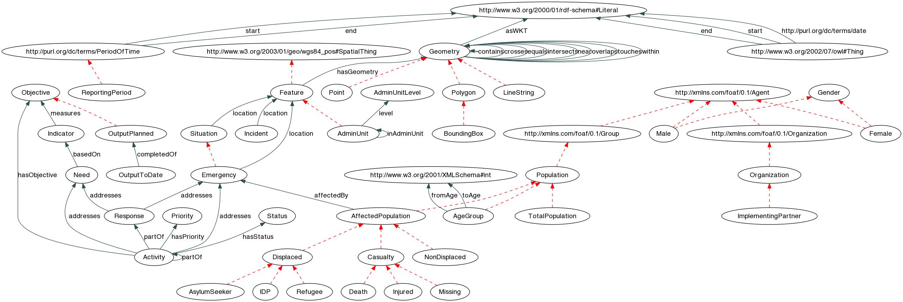
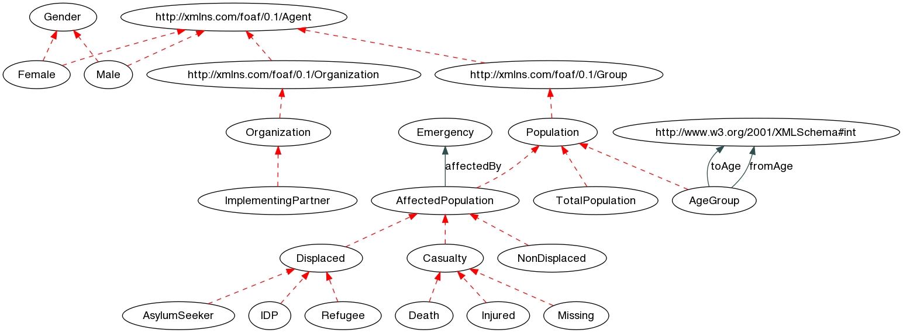
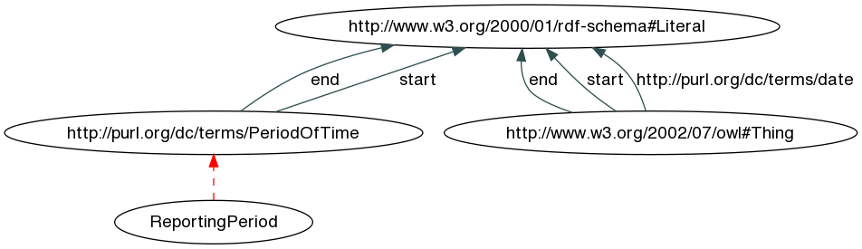
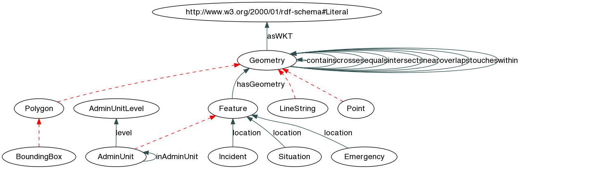
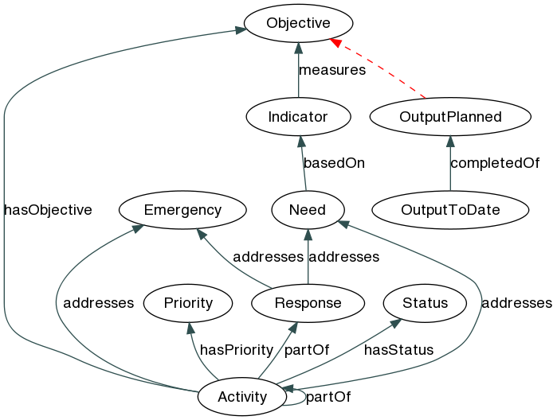

We still need to decide under which license this vocabulary should be published.
 This Vocabulary Specification relies on W3C's RDF technology, an open Web standard that can be freely used by anyone.
This Vocabulary Specification relies on W3C's RDF technology, an open Web standard that can be freely used by anyone.
This visual layout and structure of the specification was adapted from the Open Provenance Model Vocabulary edited by Jun Zhao, SIOC Core Ontology Specification edited by Uldis Bojars and John G. Breslin and the Provenance Vocabulary Core Ontology Specification edited by Olaf Hartig and Jun Zhao.
Draft specification of the Humanitarian eXchange Language (HXL) standard. This vocabulary specification is currently under development and may change at any time without notice.
The porpuse of HXL is to facilitate data exchange within the humanitarian domain. It provides a core domain model that has been created bottom-up by inspecting a broad range of systems in use with different humanitarian organizations. As needs vary widely across organizations in this domain, this vocabulary does not intend to be complete; in fact, it is the smallest common denominator. Any organizations that wish to publish full exports of their data can do so by extending this domain model with application- or organization-specific models that reflect their internal data models (which may already be formalized in an XML schema or database schema).
The Humanitarian eXchange Language is defined as a set of classes and properties. The following figure gives an overview of the different classes and properties defined by HXL, and how they are connected. The ellipses represent classes, whereas the arrows represent properties: Dashed lines indicate a subclass relationship (e.g. Camp is a subclass of Site). Solid lines are labeled with the property that connects these two classes.
[click to enlarge]
The XML Namespace URI that should be used by implementations of this specification is: http://carsten.io/hxl/ns.
The preferred prefix for the vocabulary is hxl.
An alphabetical index of all terms from the HXL vocabulary, by class and by property, is given below for quick reference. Click the terms for a more detailed description.
Classes | Humanitarian Activity | Administrative Unit | Administrative Unit Level | Affected Population | Age Group | Asylum Seeker | Bounding Box | Casualty | Death | Displaced | Emergency | Feature | Female | Gender | Geometry | Internally Displaced Person | Implementing Partner | Indicator | Injured | Line String | Male | Missing | Need | Non-Displaced | Objective | Organization | Output planned | Output to date | Point | Polygon | Population | Priority | Refugee | Reporting Period | Response | Situation | Status | Total Population | http://purl.org/dc/terms/PeriodOfTime | http://xmlns.com/foaf/0.1/Agent | http://xmlns.com/foaf/0.1/Group | http://xmlns.com/foaf/0.1/Organization |
Properties | addresses | affected by | as WKT | based on | completed of | contains | crosses | end | equals | from age | has geometry | has objective | has priority | has status | in administrative unit | intersects | level | location | measures | near | overlaps | part of | start | to age | touches | within | http://purl.org/dc/terms/date |
The cross-reference is organized into thematic sections. Each section is illustrated by a graph of the respective classes and properties. Jump directly to the different sections:
| Agent Section | Date/Time Section | Geolocation Section | Management Section |
This section of the vocabulary defines the standards for people, populations and organizations.
Alphabetical index of all classes and properties in the Agent Section:
Classes | Affected Population | Age Group | Asylum Seeker | Casualty | Death | Displaced | Female | Gender | Internally Displaced Person | Implementing Partner | Injured | Male | Missing | Non-Displaced | Organization | Population | Refugee | Total Population | http://xmlns.com/foaf/0.1/Agent | http://xmlns.com/foaf/0.1/Group | http://xmlns.com/foaf/0.1/Organization |
Properties | affected by | from age | to age |
Extended graph visualization of the Agent Section, including adjecent classes.
[click to enlarge]
The population affected by an emergency.
Term origin: Humanitarian Profile (Affected);
| Identifier: | AffectedPopulation |
|---|---|
| Subclass of: | Population |
| Subclasses: | Casualty | Displaced | Non-Displaced | |
| Domain of: | affected by | |
Generic class for age groups; instances should be created for actual age groups (e.g. children under 5).
| Identifier: | AgeGroup |
|---|---|
| Subclass of: | Population |
| Domain of: | from age | to age | |
A group of asylum seekers.
Term origin: Humanitarian Profile
| Identifier: | AsylumSeeker |
|---|---|
| Subclass of: | Displaced |
E.g. injured or dead.
Term origin: ACAPS DSS, Humanitarian Profile.
| Identifier: | Casualty |
|---|---|
| Subclass of: | Affected Population |
| Subclasses: | Death | Injured | Missing | |
A (reported) death.
Term origin: ACAPS DSS, HPM Ethiopia, Shelter Cluster, Humanitarian Profile (Dead).
| Identifier: | Death |
|---|---|
| Subclass of: | Casualty |
Refers to internally displaced persons, refugees, and others of concern.
Term origin: Humanitarian Profile, ACAPS DSS (Displacement)
| Identifier: | Displaced |
|---|---|
| Subclass of: | Affected Population |
| Subclasses: | Asylum Seeker | Internally Displaced Person | Refugee | |
A woman/girl or group of women/girls.
Term origin: CERF, EIMS Report.
| Identifier: | Female |
|---|---|
| Subclass of: | http://xmlns.com/foaf/0.1/Agent |
Class to describe gender-specific issues, either at individual or group level.
Term origin: MIRA, CCDI
| Identifier: | Gender |
|---|---|
| Subclasses: | Female | Male | |
A group of internally displaced persons (IDPs).
Term origin: Humanitarian Profile, CERF, HPM Ethiopia
| Identifier: | IDP |
|---|---|
| Subclass of: | Displaced |
An external partner implenting (parts) of a project for an agency.
Term origin: CAP OPS, Pakistan SRF, HPM Ethiopia (Partner), Sigmah DB (Partner).
| Identifier: | ImplementingPartner |
|---|---|
| Subclass of: | Organization |
Injured part of the population.
Term origin: ACAPS DSS, Humanitarian Profile, Shelter Cluster, HERAMS Checklist (Injury)
| Identifier: | Injured |
|---|---|
| Subclass of: | Casualty |
A man/boy or group of men/boys.
Term origin: CERF, EIMS Report.
| Identifier: | Male |
|---|---|
| Subclass of: | http://xmlns.com/foaf/0.1/Agent |
Missing population.
Term origin: Humanitarian Profile.
| Identifier: | Missing |
|---|---|
| Subclass of: | Casualty |
Refers to the part of the affected population that is not displaced (i.e., host or non-host);.
Term origin: Humanitarian Profile.
| Identifier: | NonDisplaced |
|---|---|
| Subclass of: | Affected Population |
A humanitarian organization.
Term origin: IATI, CAP OPS, Pakistan SRF, EIMS Report, Shelter Cluster, Sigmah DB.
| Identifier: | Organization |
|---|---|
| Subclass of: | http://xmlns.com/foaf/0.1/Organization |
| Subclasses: | Implementing Partner | |
Generic class for any kind of population (e.g. total, affected, etc.); use the subclasses for the data annotation.
| Identifier: | Population |
|---|---|
| Subclass of: | http://xmlns.com/foaf/0.1/Group |
| Subclasses: | Affected Population | Age Group | Total Population | |
A group of refugees.
Term origin: Humanitarian Profile
| Identifier: | Refugee |
|---|---|
| Subclass of: | Displaced |
Total population for a given administrative unit or geographic area. Instances can be created to make statements about this population.
| Identifier: | TotalPopulation |
|---|---|
| Subclass of: | Population |
| Identifier: | http://xmlns.com/foaf/0.1/Agent |
|---|---|
| Subclasses: | Female | Male | http://xmlns.com/foaf/0.1/Group | http://xmlns.com/foaf/0.1/Organization | |
| Identifier: | http://xmlns.com/foaf/0.1/Group |
|---|---|
| Subclass of: | http://xmlns.com/foaf/0.1/Agent |
| Subclasses: | Population | |
| Identifier: | http://xmlns.com/foaf/0.1/Organization |
|---|---|
| Subclass of: | http://xmlns.com/foaf/0.1/Agent |
| Subclasses: | Organization | |
States that a Population is affacted by an Emergency.
| Identifier: | affectedBy |
|---|---|
| Domain: | Affected Population |
| Range: | Emergency |
Specifies the bottom of an age range for an AgeGroup (in years).
| Identifier: | fromAge |
|---|---|
| Domain: | Age Group |
| Range: | http://www.w3.org/2001/XMLSchema#int |
Specifies the top of an age range for an AgeGroup (in years).
| Identifier: | toAge |
|---|---|
| Domain: | Age Group |
| Range: | http://www.w3.org/2001/XMLSchema#int |
This section of the vocabulary defines the date/time standard.
Alphabetical index of all classes and properties in the Date/Time Section:
Classes | Reporting Period | http://purl.org/dc/terms/PeriodOfTime |
Properties | end | start | http://purl.org/dc/terms/date |
Extended graph visualization of the Date/Time Section, including adjecent classes.
[click to enlarge]
The time frame that a report covers.
Term origin: Sigmah DB.
| Identifier: | ReportingPeriod |
|---|---|
| Subclass of: | http://purl.org/dc/terms/PeriodOfTime |
| Identifier: | http://purl.org/dc/terms/PeriodOfTime |
|---|---|
| Subclasses: | Reporting Period | |
| Domain of: | end | start | |
Specifies the end of activities, projects, etc.
| Identifier: | end |
|---|---|
| Domain: | http://www.w3.org/2002/07/owl#Thing http://purl.org/dc/terms/PeriodOfTime |
| Range: | http://www.w3.org/2000/01/rdf-schema#Literal |
Specifies the start of time periods.
| Identifier: | start |
|---|---|
| Domain: | http://www.w3.org/2002/07/owl#Thing http://purl.org/dc/terms/PeriodOfTime |
| Range: | http://www.w3.org/2000/01/rdf-schema#Literal |
Generic property for date/time stamps at arbitrary granularity.
| Identifier: | http://purl.org/dc/terms/date |
|---|---|
| Domain: | http://www.w3.org/2002/07/owl#Thing |
| Range: | http://www.w3.org/2000/01/rdf-schema#Literal |
This section of the vocabulary defines the geolocation standard.
Alphabetical index of all classes and properties in the Geolocation Section:
Classes | Administrative Unit | Administrative Unit Level | Bounding Box | Feature | Geometry | Line String | Point | Polygon |
Properties | as WKT | contains | crosses | equals | has geometry | in administrative unit | intersects | level | location | near | overlaps | touches | within |
Extended graph visualization of the Geolocation Section, including adjecent classes.
[click to enlarge]
Administrative units can include coutries, regions, cities, etc. The hierarchy of administrative units can vary from country to country.
| Identifier: | AdminUnit |
|---|---|
| Subclass of: | Feature |
| Domain of: | in administrative unit | level | |
| Range of: | in administrative unit | |
The specific administrative unit levels can vary from country to country. Administrative Unit Level 0 is a country – in this case, hxl:Country should be used.
| Identifier: | AdminUnitLevel |
|---|---|
| Range of: | level | |
A BoundingBox is a Polygon defined by 1 exterior boundary and 0 interior boundaries. The exterior boundary consists of 4 points arranged as a rectangle.
| Identifier: | BoundingBox |
|---|---|
| Subclass of: | Polygon |
Any real-word phenomenon with spatial extent, i.e. size, shape, or position.
| Identifier: | Feature |
|---|---|
| Subclass of: | http://www.w3.org/2003/01/geo/wgs84_pos#SpatialThing |
| Subclasses: | Administrative Unit | |
| Domain of: | has geometry | |
| Range of: | location | |
Abstract root class of the geometry. This class should not be instantiated; use any of the subclasses when creating actual geometries.
| Identifier: | Geometry |
|---|---|
| Subclasses: | Line String | Point | Polygon | |
| Domain of: | as WKT | contains | crosses | equals | intersects | near | overlaps | touches | within | |
| Range of: | contains | crosses | equals | has geometry | intersects | near | overlaps | touches | within | |
A LineString is a Curve with linear interpolation between Points. Each consecutive pair of Points defines a Line segment.
| Identifier: | LineString |
|---|---|
| Subclass of: | Geometry |
A Point is a 0-dimensional geometric object and represents a single location in a two- or three-dimensional coordinate space.
| Identifier: | Point |
|---|---|
| Subclass of: | Geometry |
A Polygon is a planar Surface defined by 1 exterior boundary and 0 or more interior boundaries. Each interior boundary defines a hole in the Polygon.
| Identifier: | Polygon |
|---|---|
| Subclass of: | Geometry |
| Subclasses: | Bounding Box | |
A geometry serialized as WKT. Note that the WKT serialization contains the spatial reference system (SRS), as specified in the OGC Simple Feature standard. If no SRS is given, HXL uses WGS 84 as the standard SRS.
| Identifier: | asWKT |
|---|---|
| Domain: | Geometry |
| Range: | http://www.w3.org/2000/01/rdf-schema#Literal |
Topological relation. States that one geometry contains another one.
| Identifier: | contains |
|---|---|
| Domain: | Geometry |
| Range: | Geometry |
Topological relation. States that one geometry crosses another one.
| Identifier: | crosses |
|---|---|
| Domain: | Geometry |
| Range: | Geometry |
Topological relation. States that two geometries are equal.
| Identifier: | equals |
|---|---|
| Domain: | Geometry |
| Range: | Geometry |
Relates a feature to its geometry.
| Identifier: | hasGeometry |
|---|---|
| Domain: | Feature |
| Range: | Geometry |
Specifies direct containment between two administrative units. This property should only be used between administrative units that directly contain each other, i.e., when the administrative unit level of the containing unit is the level of the contained unit plus 1.
| Identifier: | inAdminUnit |
|---|---|
| Domain: | Administrative Unit |
| Range: | Administrative Unit |
Topological relation. States that one geometry intersects another one.
| Identifier: | intersects |
|---|---|
| Domain: | Geometry |
| Range: | Geometry |
Specifies the level for an administrative unit.
| Identifier: | level |
|---|---|
| Domain: | Administrative Unit |
| Range: | Administrative Unit Level |
Specififes the location for things like emergencies, projects, or camps.
| Identifier: | location |
|---|---|
| Domain: | Emergency Situation |
| Range: | Feature |
Topological relation. States that one geometry is near another one.
| Identifier: | near |
|---|---|
| Domain: | Geometry |
| Range: | Geometry |
Topological relation. States that one geometry overlaps another one.
| Identifier: | overlaps |
|---|---|
| Domain: | Geometry |
| Range: | Geometry |
Topological relation. States that one geometry touches another one.
| Identifier: | touches |
|---|---|
| Domain: | Geometry |
| Range: | Geometry |
Topological relation. States that one geometry is within another one.
| Identifier: | within |
|---|---|
| Domain: | Geometry |
| Range: | Geometry |
This section of the vocabulary defines the standards for reporting and planning.
Alphabetical index of all classes and properties in the Management Section:
Classes | Humanitarian Activity | Emergency | Indicator | Objective | Output planned | Output to date | Priority | Response | Status |
Properties | addresses | based on | completed of | has objective | has priority | has status | measures | part of |
Extended graph visualization of the Management Section, including adjecent classes.
[click to enlarge]
An Activity generally addresses some kind of need given in a Humanitarian Situation. Synonyms: Project, intervention.
Term origin: IATI, CAP OPS, Pakistan SRF, Sahana Project, Sigmah DB
| Identifier: | Activity |
|---|---|
| Domain of: | addresses | has objective | has priority | has status | part of | |
| Range of: | part of | |
Any situation in which ... life or well-being ... will be threatened unless immediate and appropriate action is taken, and which demands an extraordinary response and exceptional measures” (UNHCR Handbook for Emergencies)
A sudden crisis situation or event requiring immediate action (WART)
Any situation in which there is an exceptional and widespread threat to life, health or basic subsistence, that is beyond the coping capacity of individuals and the community” (Oxfam GB Emergency Response Manual).
Where and when a disaster provokes an immediate, exceptional and widespread threat to life, health or basic subsistence, which overwhelms the coping capacity of individual and community, implying need of external assistance” (source: ACFIN Emergency module)
Term origin: CAP OPS, Pakistan SRF, ACAPS DSS, CERF, MIRA.| Identifier: | Emergency |
|---|---|
| Subclass of: | Situation |
| Domain of: | location | |
| Range of: | addresses | affected by | |
Concrete measurable reference for a concrete need; e.g., 5 litres of clean water per person and day.
Term origin: Pakistan SRF, ACAPS DSS, CCDI, CERF, HPM Ethiopia, Sigmah DB
| Identifier: | Indicator |
|---|---|
| Domain of: | measures | |
| Range of: | based on | |
And objective is a goal for an activity, measureable in terms of an indicator.
Term origin: Sahana Project, CERF
| Identifier: | Objective |
|---|---|
| Subclasses: | Output planned | |
| Range of: | has objective | measures | |
Planned output for an activity.
| Identifier: | OutputPlanned |
|---|---|
| Subclass of: | Objective |
| Range of: | completed of | |
The measured output of a planned output at a certain date.
| Identifier: | OutputToDate |
|---|---|
| Domain of: | completed of | |
The priority for a project or activity. Individuals of this class should be created whenever a fixed scale for priorities is in use.
Term origin: CAP OPS, UNHCR Camp DB, Sahana Project, MIRA, HPM Ethiopia.
| Identifier: | Priority |
|---|---|
| Range of: | has priority | |
Generic term for the collection of all activities that address the needs araising from an emergency.
Term origin: ACAPS DSS, ACAPS DSS, MIRA, EDXL, CCDI (Humanitarian Response), CERF (Humanitarian Response)
| Identifier: | Response |
|---|---|
| Domain of: | addresses | |
| Range of: | part of | |
Status of an activity. Can be instantiated by organizations that use standardized status codes.
Term origin: Sahana Project CCDI, CERF, EDXL.
| Identifier: | Status |
|---|---|
| Range of: | has status | |
States that a certain activity addresses a situation description.
| Identifier: | addresses |
|---|---|
| Domain: | Response Humanitarian Activity |
| Range: | Emergency Need |
Specififes that a gap for a certain need has been identified based on a specific indicator.
| Identifier: | basedOn |
|---|---|
| Domain: | Need |
| Range: | Indicator |
Relates the output to date to the output planned.
| Identifier: | completedOf |
|---|---|
| Domain: | Output to date |
| Range: | Output planned |
Defines the objectives for an activity or project.
| Identifier: | hasObjective |
|---|---|
| Domain: | Humanitarian Activity |
| Range: | Objective |
Defines the priority for an activity or project.
| Identifier: | hasPriority |
|---|---|
| Domain: | Humanitarian Activity |
| Range: | Priority |
Sets the current status for an activity.
| Identifier: | hasStatus |
|---|---|
| Domain: | Humanitarian Activity |
| Range: | Status |
Specififes the need or objective that a certain indicator addresses or measures. Eventually create second property for objectives?
| Identifier: | measures |
|---|---|
| Domain: | Indicator |
| Range: | Objective |
Specifies part-whole relationships; e.g., a specific Project can be partOf the Response to a certain Emergency.
| Identifier: | partOf |
|---|---|
| Domain: | Humanitarian Activity |
| Range: | Response Humanitarian Activity |
Changes compared to the previous version of the vocabulary: